How to use this page
- Before the lab: read the aim, study the diagram and use the simulation to predict what you will measure.
- During the lab: compare your readings with the simulation. A big difference is a clue: check the wiring, the component values and the instrument settings.
- After the lab: answer the open questions in your record. They have no single right answer and no answers are given here: explain your reasoning with your own readings.
The simulations use the circuit and model values printed in the lab manual. Where the manual gives no values (Experiments 5, 11 and 12), an example model is used and clearly labelled. Simulated numbers are a guide, not a substitute for your own readings.
Time response of a second-order system
Aim. Find the step response of a series RLC circuit when it is underdamped, critically damped and overdamped, and measure the time-domain specifications (delay, rise, peak and settling time, peak overshoot).
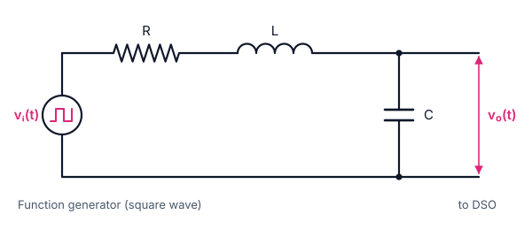
$$\frac{V_0(s)}{V_i(s)} = \frac{1/LC}{s^2 + (R/L)\,s + 1/LC}, \qquad \omega_n = \frac{1}{\sqrt{LC}}, \qquad \zeta = \frac{R}{2}\sqrt{\frac{C}{L}}$$
Manual design: $L = 100$ mH, $C = 0.1\ \mu$F, so $\omega_n = 10\,000$ rad/s. $R = 200\ \Omega$ gives $\zeta = 0.1$, $R = 2$ kΩ gives $\zeta = 1$ and $R = 4$ kΩ gives $\zeta = 2$. Use the buttons to load each case.
Interactive simulation
Open questions for practice
- If your measured overshoot for the $\zeta = 0.1$ setting is much smaller than theory predicts, which parts of the real circuit (the inductor's own resistance, the generator's output resistance, the probe) could be adding damping? How would you test each one?
- Why must half the square-wave period be at least $5\tau$? Predict what the DSO trace would look like at ten times that frequency, and explain which specification you would then measure wrongly.
- Keep $\zeta$ fixed and double both $L$ and $C$. What happens to $\omega_n$, to the overshoot and to the settling time? Check your prediction in the simulation and explain why only some specifications change.
- The manual uses 0–100 % rise time for the underdamped case but 10–90 % for the overdamped case. Why can one definition not serve all three cases? Which would you choose for a datasheet, and why?
- For a servo that must stop at a position without hitting a mechanical end-stop, would you choose $\zeta = 0.1$, $0.7$ or $2$? Argue using at least two specifications, not overshoot alone.
Frequency response of an RC lead compensation network
Aim. Obtain the gain and phase of a passive RC lead network over a range of frequencies, and find its corner frequencies and maximum phase lead.
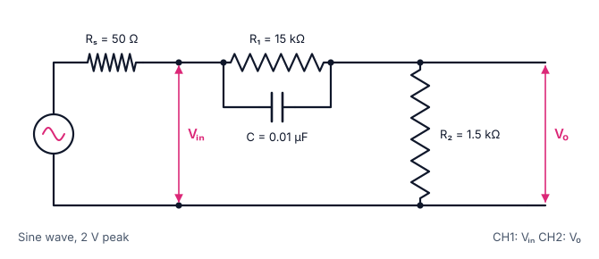
$$G_c(s) = \frac{V_0(s)}{V_{in}(s)} = \alpha\,\frac{1 + sT}{1 + s\alpha T}, \qquad T = R_1C, \qquad \alpha = \frac{R_2}{R_1 + R_2} < 1, \qquad \phi_{max} = \sin^{-1}\frac{1-\alpha}{1+\alpha}$$
Move the test frequency slider to see what the oscilloscope should show at each step of your tabular column. The table under the plots gives the calculated values at the manual's frequencies.
Interactive simulation
Open questions for practice
- At low frequency the network passes only a fraction $\alpha$ of the signal. In a real control loop this loss must be made up. Where would you add the extra gain, and what goes wrong if you forget it?
- Your DSO measures a time difference $\Delta t$, not a phase. At high frequency $\Delta t$ becomes tiny. How does the accuracy of your phase reading change across the range, and how could you improve it?
- The 50 Ω source resistance does not appear in the transfer function. Under what conditions would it start to matter, and how would you include it in the analysis?
- Suppose a design needs 55° of phase lead at 2 kHz. Use the sliders to decide whether one stage of this network can provide it. If not, what would you propose, and what does it cost you?
- Using the Bode plot, explain why a lead network makes a closed-loop system faster but also more sensitive to high-frequency sensor noise.
Frequency response of an RC lag compensation network
Aim. Obtain the gain and phase of a passive RC lag network over a range of frequencies, and find its corner frequencies and maximum phase lag.
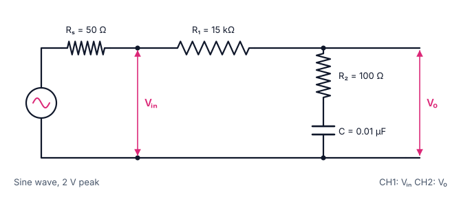
$$G_c(s) = \frac{1 + s\tau}{1 + s\beta\tau}, \qquad \tau = R_2C, \qquad \beta = \frac{R_1 + R_2}{R_2} > 1, \qquad \omega_1 = \frac{1}{\beta\tau}, \quad \omega_2 = \frac{1}{\tau}$$
With the manual's values the two corners are far apart ($\beta \approx 151$), so the phase lag gets very large between them.
Interactive simulation
Open questions for practice
- In a compensated system, designers place both corner frequencies of the lag network well below the gain crossover frequency. Why? What would happen to the phase margin if they did not?
- At high frequency the gain levels off at $R_2/(R_1+R_2)$. What sets this value physically, and how can a network that attenuates still improve the steady-state error of a loop?
- Change $R_2$ from 100 Ω to 1 kΩ. Describe how the maximum lag and the frequency where it occurs move, and relate this to $\beta$.
- The manual's theory calls it "positive phase lag". Is the phase positive or negative on your measured plot? Write a clear sign convention for your lab record and explain why it matters.
- What kind of network would you have if the zero came before the pole? Without calculating, sketch how its Bode plot would look.
Frequency response of an RC lag-lead compensation network
Aim. Draw the frequency response of a lag-lead network and find its corner frequencies, maximum phase lag and maximum phase lead.
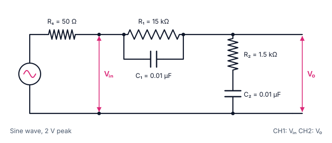
$$G_c(s) = \frac{(1 + sR_1C_1)(1 + sR_2C_2)}{(1 + sR_1C_1)(1 + sR_2C_2) + sR_1C_2}$$
At low frequency the network lags, at high frequency it leads, and the gain is 0 dB at both ends.
Interactive simulation
Open questions for practice
- From the Bode plot, mark the frequency band where the network acts as lag and the band where it acts as lead. Why does the lag band come first and not the other way round?
- Make $C_2$ ten times larger. Predict first, then check: which corner frequencies move, and which part of the network have you mainly changed?
- The two sections share the same current, so they load each other. Why can you not simply multiply the lead network of Experiment 2 by the lag network of Experiment 3? When would that shortcut be acceptable?
- Theory says the gain is 0 dB at very low frequency. If you read −1 dB at 10 Hz, list the possible causes and how you would find the real one.
- Name one practical system where you would choose a lag-lead network instead of a PID controller, and justify the choice.
Effect of P, PI, PD and PID controllers on a second-order system (hardware)
Aim. Study the steady-state performance of analog P, PI, PD and PID controllers using the PID controller kit, by reading the set-point $V_i$, feedback $V_f$ and error $V_e$ for different gains.
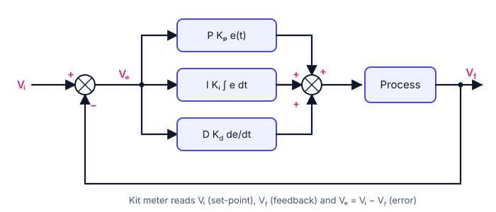
$$u(t) = K_p\,e(t) + K_i\int_0^t e(\tau)\,d\tau + K_d\,\frac{de(t)}{dt}$$
Example plant The manual does not give the kit's internal process, so the simulation uses an example second-order process $G(s) = \dfrac{1}{(0.2s+1)(0.1s+1)}$ with a DC gain of 1. Your kit's numbers will differ, but the trends should be the same.
Interactive simulation
Open questions for practice
- With P alone, $V_e$ never reaches zero. From your readings, find how $V_e$ depends on P. Why does a larger P reduce the error but never remove it?
- With I added, the meter shows $V_e \approx 0$. What happens on the way to steady state? Why can integral action be dangerous when the actuator has a limit (integrator wind-up)?
- The D action does not change the steady-state readings in your table. So why do industrial controllers include it? What measurement would you need to see its effect?
- The kit's D action differentiates the error. What happens to the controller output when the set-point is changed suddenly, and how do real controllers avoid this?
- Design a short test, using only P-controller readings on the kit, to estimate the DC gain of the kit's internal process.
Unit step response of a second-order system using MATLAB
Aim. Obtain the unit step response of a given transfer function in MATLAB and compare the underdamped, critically damped and overdamped cases.
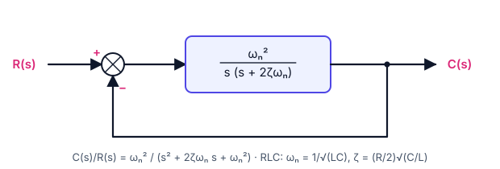
$$G(s) = \frac{\omega_n^2}{s^2 + 2\zeta\omega_n s + \omega_n^2}$$
The grey curves are the three systems in the manual's program. The coloured curve is yours: change $\zeta$ and $\omega_n$, then copy the MATLAB code below the plot and run it.
Interactive simulation
Open questions for practice
- The manual's systems use $\omega_n = 10\,000$ rad/s. How would the time vector
thave to change if $\omega_n$ were 10 rad/s, and what goes wrong if you forget to change it? - Raise $\zeta$ from 0.2 to 0.8 in steps. Which specification changes the most, and which hardly changes? Explain using the formulas.
- MATLAB's
stepinfouses a 10–90 % rise time, while Experiment 1 used 0–100 % for the underdamped case. What errors could this cause if you compare the two experiments? - Textbooks often call $\zeta \approx 0.7$ "optimal". Optimal for what? Describe a situation where you would deliberately choose $\zeta \ge 1$.
- If your DSO trace from Experiment 1 shows less overshoot than MATLAB for the same R, L and C, which do you trust, and how would you decide?
Effect of P, PD, PI and PID controllers using MATLAB
Aim. Simulate the effect of P, PI, PD and PID controllers on the second-order plant $G(s) = 1/(s^2 + 10s + 20)$ for a unit step input.
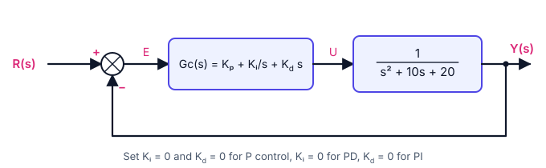
$$T(s) = \frac{K_d s^2 + K_p s + K_i}{s^3 + (10 + K_d)s^2 + (20 + K_p)s + K_i}$$
Interactive simulation
Open questions for practice
- With P control ($K_p = 300$) the final value is not 1. Explain why from the closed-loop transfer function, and find the $K_p$ needed for less than 2 % error. What do you lose by using that gain?
- At the same $K_p$, PD gives less overshoot than P. Explain this with the movement of the closed-loop poles (use the pole readout).
- The PI controller ($K_p = 30$, $K_i = 70$) removes the steady-state error but responds slowly. Why does a small $K_p$ make it slow, and what happens if you raise only $K_i$?
- The manual says the PID controller gives "no overshoot". Look closely at the simulated curve. Is that strictly true? How can the zeros added by a PID controller cause overshoot even when all poles are well damped?
- On real hardware, $K_d = 50$ with a noisy sensor would cause trouble. How would you change the derivative term in practice, and what would you give up?
Simulation of a DC position control system using MATLAB Simulink
Aim. Build a closed-loop DC position control system in Simulink, obtain its step response and find the rise time, peak time, settling time, maximum overshoot and steady-state error.
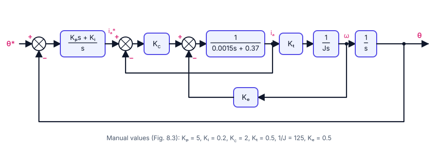
The simulation solves exactly this block diagram with the manual's values. It also shows the armature current and speed inside the loop, which you can see in Simulink by adding a Scope to those signals.
Interactive simulation
Open questions for practice
- The model has an inner current loop inside an outer position loop. Why do engineers use this cascade structure instead of one controller driving the motor voltage directly?
- Make the load heavier (lower 1/J). How do the overshoot and settling time change? What would a technician have to retune on the real drive?
- The motor already contains an integrator (speed to position). Why does the controller still need $K_i$? Which kind of disturbance makes $K_i$ essential?
- Compare the peak armature current for a small and a large $K_p$. Why is current, not voltage, usually what limits how fast a real servo can move?
- This model is linear, so a 2 rad step gives exactly twice the 1 rad response. List the real-world effects that make a large step behave differently on hardware.
Stability analysis (root locus and Bode plot) of an LTI system using MATLAB
Aim. Find the stability of the given systems by plotting the root locus and the Bode plot in MATLAB, and read the gain margin, phase margin and crossover frequencies.
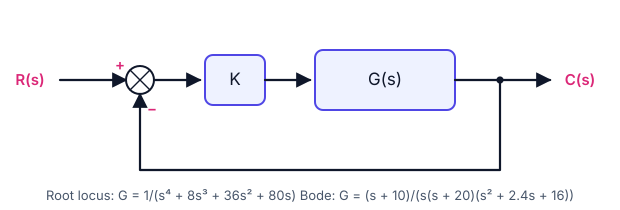
Part A · Root locus
Move $K$ and watch the four closed-loop poles travel along the locus. The open-loop poles are at $0$, $-4$ and $-2 \pm j4$.
Part B · Bode plot and margins
Open questions for practice
- From the root locus, find where the branches cross the $j\omega$ axis and the gain at that point. Confirm the gain with the Routh criterion and compare the two answers.
- Describe how the dominant closed-loop poles move as $K$ rises from 1 to 200, and how the step response would change along the way.
- In Part B, find the $K$ that gives a phase margin of about 45°. What is the gain margin at that $K$, and would you accept the design? Why?
- Changing $K$ moves the magnitude plot but leaves the phase plot unchanged. What does that tell you about using gain alone as a design tool?
- A system can have a comfortable gain margin but a very small phase margin. What would its step response look like, and which margin would you trust more for a motor drive with a time delay?
Transfer function ⇄ state space, controllability and observability using MATLAB
Aim. Convert a transfer function to a state-space model and a state-space model back to a transfer function, and check controllability and observability using the ranks of $Q_c$ and $Q_o$.
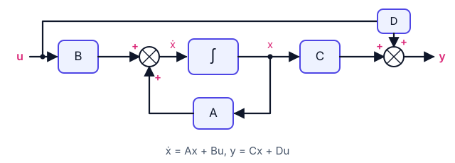
Part A · Transfer function to state space (tf2ss)
Type the coefficients of $G(s) = \dfrac{b_1 s + b_0}{s^2 + a_1 s + a_0}$. The page builds the same $A, B, C, D$ that MATLAB's tf2ss returns.
Part B · State space to transfer function (ss2tf)
Type any 2 × 2 state model. The manual's example is loaded.
Open questions for practice
- The manual's Part A converts $\dfrac{2s+5}{s^2+4s+5}$, and Part B starts from $A = [0\ \ 1;\ -5\ \ -4]$, $B = [0;\ 1]$, $C = [2\ \ 5]$. Run Part B: do you get back the transfer function of Part A? If not, what change to $C$ would make the two models equivalent, and what does this tell you about how the order of the states matters?
- In Part A, set the numerator to $s + 1$ and the denominator to $s^2 + 3s + 2$. What happens to the observability rank? Explain how the transfer function can "hide" a state.
- A system is controllable but not observable. Can you still stabilise it using only its output? What extra tool would you need?
- The eigenvalues of $A$ are poles of $G(s)$. Is the reverse always true: does every eigenvalue appear as a pole? Use your result from question 2.
- For a DC motor with states current and speed, explain in plain words what it would mean physically if the system were not controllable from the voltage input.
Position control of a DC motor using the DC position control module
Aim. Study and analyse the position control characteristics of a DC motor using the DC position control hardware module.
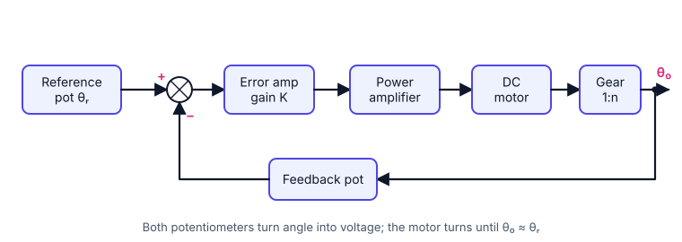
Example model The manual lists this experiment but gives no procedure or values. The simulation uses the motor of Experiment 8 with a proportional error amplifier, a potentiometer gain of 10 V/rad and an amplifier that saturates at ± its supply. Use it to explore trends, then compare with your module.
Interactive simulation
Open questions for practice
- With a large gain $K$ the amplifier hits its limit. How does saturation change the response compared with the linear model of Experiment 8?
- Keep $K$ the same and compare a 20° step with a 180° step. Why are the overshoot and settling time different, even though the controller has not changed?
- Real gearboxes have backlash and motors have static friction. Predict how each would show up in the final position error and in the way the shaft settles.
- How would you measure the potentiometer sensitivity (V/rad) on the module before starting, and why does it matter for the loop gain?
Design of a PID controller for speed control of a DC motor using Simulink
Aim. Design a PID controller that holds the speed of a DC motor at its set-point, and test how it rejects a sudden load torque.
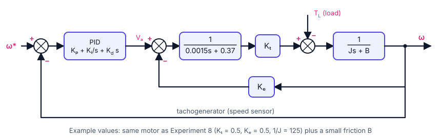
Example model The manual lists this experiment but gives no procedure or values. The simulation uses the motor of Experiment 8 ($K_t = K_e = 0.5$, $1/J = 125$, armature $1/(0.0015s + 0.37)$) with a small friction $B = 0.002$. The derivative acts on the measured speed, as most drives do, so a set-point step gives no derivative kick. A load torque is applied at $t = 1.5$ s.
Interactive simulation
Open questions for practice
- With P only, the speed never reaches the set-point and drops further when the load is applied. Explain why from the steady-state equations, and why integral action fixes both problems.
- The load torque enters after the controller. Why is the speed dip after the load a better test of a speed controller than the start-up response?
- The armature voltage must come from a real converter with a limit. Look at the voltage plot: how would the response change if the limit were 60 V?
- Here the derivative acts on the measured speed, not on the error. Why is this common in drives, and what does $K_d$ do to the speed dip?
- How would you build this model in Simulink? List the blocks, and say where the load torque step enters and how you would set its step time.
Source: Control Systems Engineering Lab Manual, AY 2026-27, Department of EEE, Presidency University. Diagrams redrawn from the manual; simulations computed in your browser.